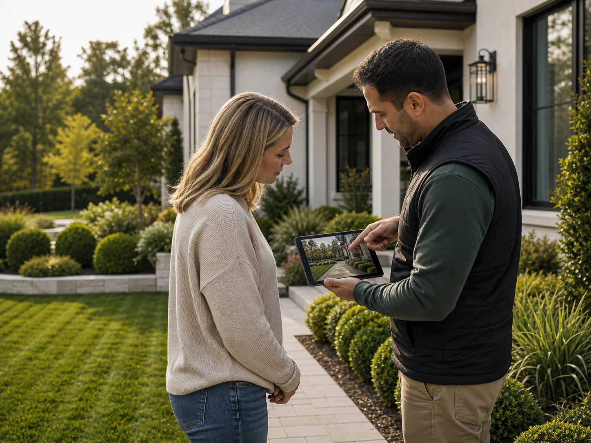

Clarity first
Photos, access, timing, service frequency, yard condition, and priority zones are organized before a request is sent out.
About the network
Verdant Yard Care helps homeowners turn rough lawn needs into clear service requests that independent providers can review, price, and schedule with fewer missed details.
Why it exists
Homeowners often know what feels wrong with the yard, but not what a provider needs to estimate the work: access, growth height, edge length, debris volume, watering constraints, turf history, pets, gates, or disposal rules.
Our role is to structure that information before the work is confirmed. The result is a cleaner handoff: providers still confirm final scope, price, insurance, warranties, materials, timing, and terms, but the request starts with the details that matter.
Photos, access, timing, service frequency, yard condition, and priority zones are organized before a request is sent out.
Independent providers confirm their own pricing, schedule, licenses, insurance, warranties, and final terms.
Grass growth, weather, soil temperature, water access, and debris volume all shape the right lawn care plan.

Client coordination
Collect yard photos, service goals, access notes, and timing preferences.
Separate mowing, turf, cleanup, disposal, and special-condition details.
Route a clearer request for independent provider review and confirmation.
Service approach
We focus on scope clarity: photos, access, grass height, debris volume, turf symptoms, and the areas that matter most.
Providers confirm availability, final pricing, terms, materials, insurance, licenses where applicable, and whether the request needs adjustment.
Homeowners know what has been requested, what still depends on the provider, and what preparation may help the service go smoothly.
Homeowner feedback
Homeowners value a process that makes yard details easier to explain, expectations easier to confirm, and provider conversations more specific from the start.